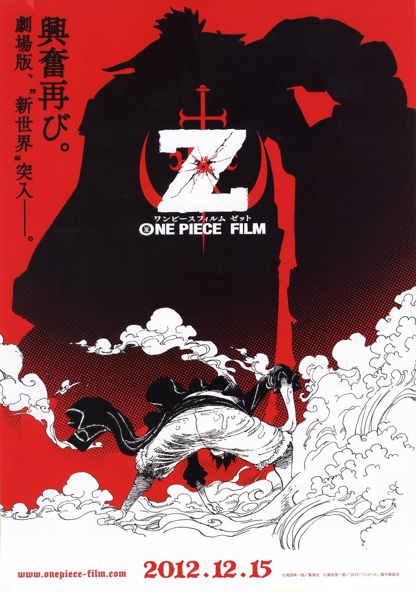
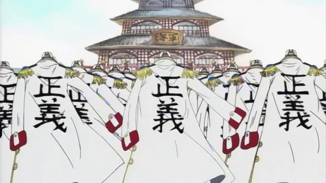
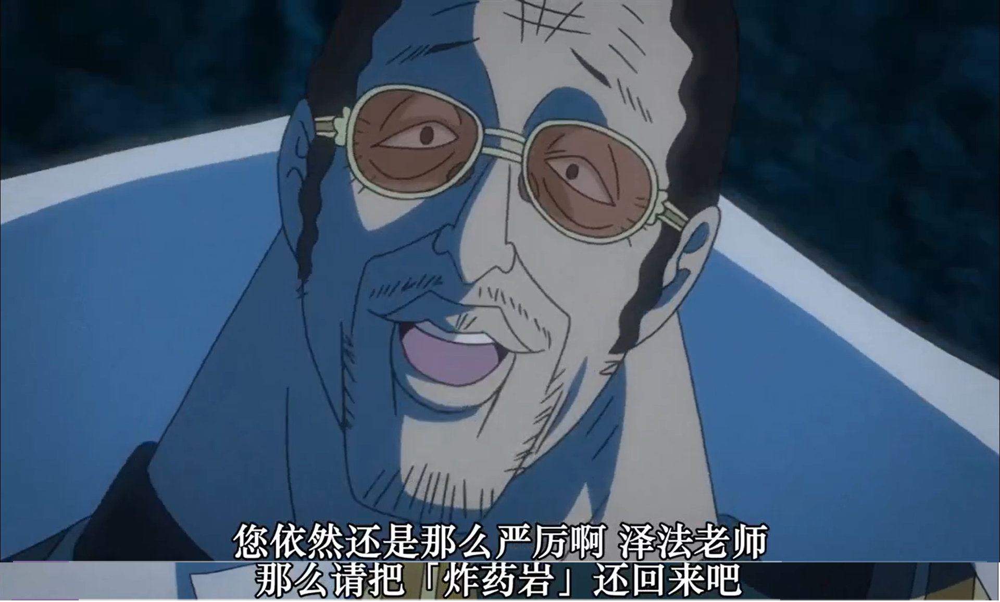
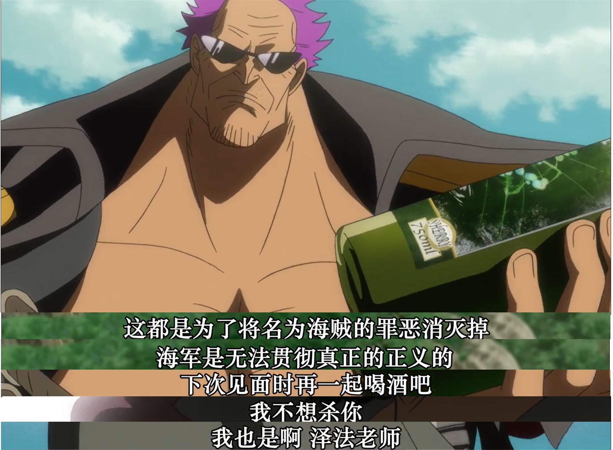
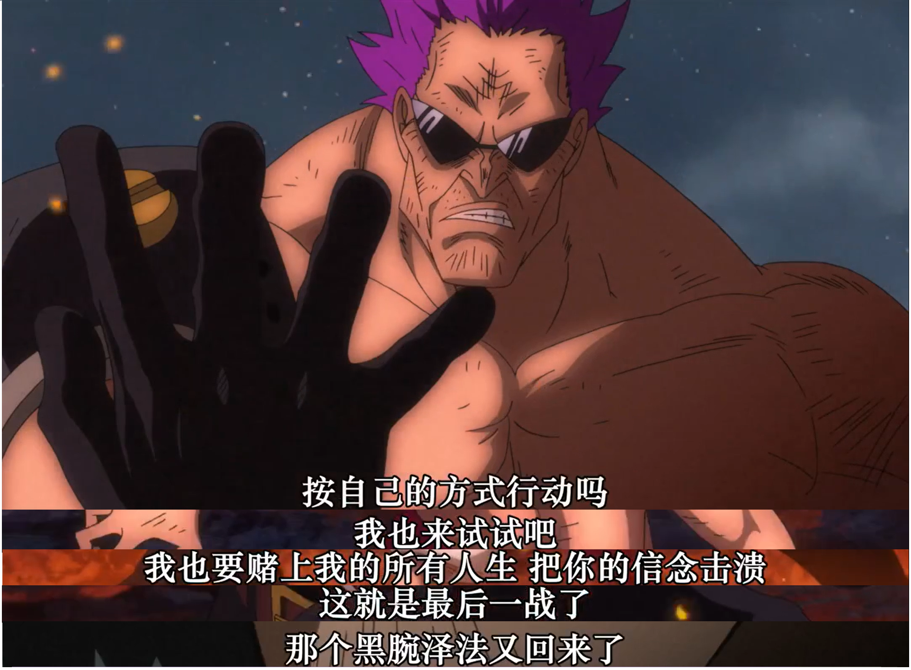
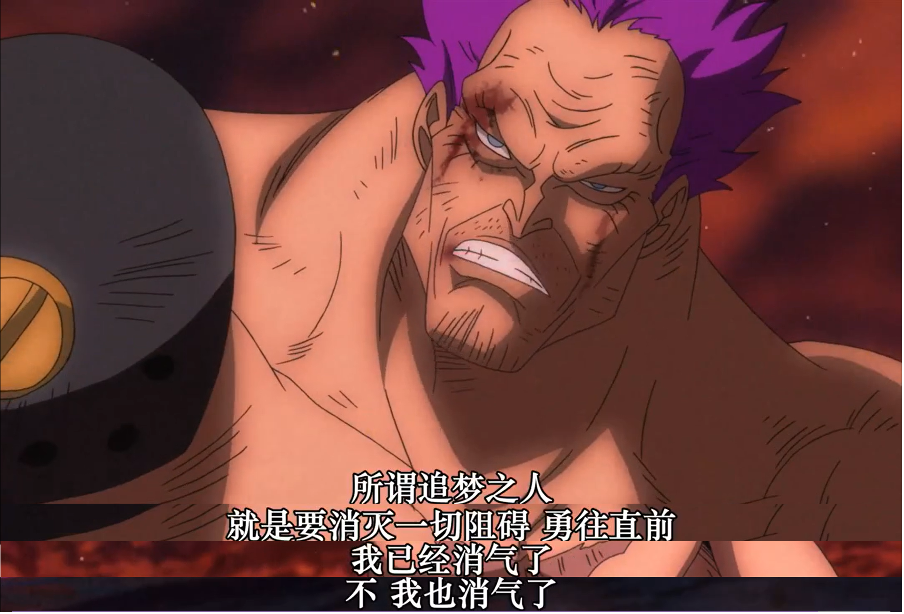

劇場版-Z
簡介
「海は见ている。世界の始まりも。
大海在看著，這個世界的開始
海は知っている。世界の终わりも。
大海也知道，這個世界的終點。
だからいざなう。进むべき道へと。
所以它邀請的方向，是前進的道路。
だから导く。正しい世界へ。
所以它指引的方向，是正義的世界。」
-《かいどう(大海的引導)》 -
弔念死去海軍士兵的聖歌，彷彿從一開始就預示著澤法老師終將殞落般悠悠響起，卻隨即被此起彼落的炮聲掩蓋，畫面一轉是NEOV新海軍攻擊和搶奪海軍基地裡毀天滅地的兵器， 動用手上巨大無堅不摧的海樓石手腕迎擊背上掛著"正義"的大軍，也是這裡從頭暗示我們澤法老師雖身為原海軍，但心中早已不是原本的正義了。
Z原名澤法(ゼファー)，從小便有強烈的正義感，從小就加入海軍，夢想成為打擊邪惡海賊的正義英雄，掌握六式和武裝色的他很快地就晉升大將，是位對惡不包容，但不會殺敵死人
的正義，同時也組成了家庭；但就在事業和人生的頂峰之時，人生逐漸迎來了變革，有天家人被海賊殺害，他決定從前線退居後援，從事軍事教官，黃猿、青雉、赤犬便是他的第一批
學生，之後更教導了許多次世代的海軍；但悲劇並不止於此，之後在帶領年輕海兵時，遭到海賊攻擊，全船海兵只剩兩位新兵而澤法也失去了右手，悲憤交加的他裝上由海螺石打造的
機械手臂，組成突擊隊，誓死剿滅所有海賊，彼時的他眼神黯淡失去了從前的光芒，神情凝重似乎再也容忍不了"海賊"二字，也捨棄了不殺信條，以機械手臂和墨鏡武裝起來，再也無法從外在
看到他當年的純赤燃燒的正義之情；然而，殲滅新兵的那名海賊卻加入了王下七武海，也就是政府的麾下，這顯然讓處於崩潰邊緣的澤法再也不相信正義了，將海軍標誌翻轉與象徵海賊的
骷髏結合再以一柄屬於澤法心中的"正義"之劍往下貫穿兩者，新海軍便由此誕生，此次他也不管是否會傷及海軍平民或是海賊，搶奪了炸藥，企圖要毀滅整個新世界，沒有了大海，海賊亦不存在
，也不會有海軍，至於平民那些本就為海賊所苦的人，只要犧牲一小點，就可以換來未來的保障，躁狂的紫髮下早已沒有了童年純真的正義感了。

痛失與領悟
正義
我覺得整部作品可惜的點是以魯夫為主作為劇情的核心點，用草帽海賊團新時代的身分、無畏的精神，來與Z做內心的碰撞，雖然這並沒有偏離尾田的作品核心，保持新世代與舊世代的這種描寫， 但海軍這一部份其實我一直都希望可以用海軍那邊的人物來鋪陳這些事情。
尾田創造出海軍最主要的矛盾點就是正義，海賊無惡不作，顯然與之相對的就是身為平民護盾的海軍，許多年輕的海兵就是為了保護家人或是出身被 海賊摧殘的村莊而加入正義的一方，然而在每個人的心中正義的天平並非絕對，隨著本性、官階和經驗，每個人呈現出來的正義也有許多不同，有人認為平民優先，有人認為海賊罪魁禍首所以消滅邪惡優先，平民則次之， ，大部分人在見識到兩種極端後，心中的正義都開始動搖；而大將亦是如此。
當得知世界政府自詡為天龍人，視眾生為賤種，卡普選擇拒絕晉升，青雉選擇「從容不迫的正義」，最後退出海軍，赤犬選擇「絕對的正義」依然我行我素貫徹海賊即滅的信條，黃猿則是「模棱兩可的正義」，靜靜的看著一切彷彿脫離了這些，只要繼續執行任務即可， 每個人心中各自懷揣著不同的正義，而身先士卒的澤法也退出了海軍執行他心中的正義。
黃猿，是注定無法阻止老師的。
澤法老師對上的第一個學生便是黃猿，從戰鬥方式來看黃猿也還是沒有全力應戰，漫不經心的態度顯現出他的正義告訴他凡事盡力就好，過往的種種浮現於腦海，「澤法老師 ，你還是一樣很嚴厲呢」，事實上模稜兩可的正義也可解釋成他將自己擺在邊上以俯瞰萬物之姿綜觀著全局，沒有哪方好或壞，只有將職責做好，剩下的只是吃著仙貝、看著棋局繼續進行就好了呢。
從以前就跟老師是最不相容的，兩人的正義自然也無法走向同一條道路，他只不過是在做著自己應盡的義務，與之相比，另一方卻是乘載壓力、仇恨和堅定的信念。
青雉，與老師相似的道路
青雉起初也追隨著熱熾的正義，但在奧哈拉事件中，目擊赤犬下令炮轟平民逃脫的船，他也冷卻下來了，正義開始在他心中動搖，漸漸地看了更多事情之後，發現正義並不如他想的那般純正， 「那麼甚麼才是正義?」，帶著疑問的他放走了羅賓並且在之後的數十年間保護並持續觀察，不僅僅只是對羅賓的仁慈，同時也緩下手邊的職務，開始腳踏車環海為了用自己的雙眼看清楚這個世界，尋求自己的正義。
在最終島上，最後一次與澤法老師相遇，兩個人都不再相信海軍的正義，但立場還是不同，冷冷果實蔓延至手臂，氣氛一度劍拔弩張，但還是收手了，或許青雉也知道他沒辦法讓老師打消念頭， 也不想傷害引領他長大的人，這次他選擇繼續觀望，他轉而告知草帽一夥澤法的計畫，希望他們能做出什麼，跟他不一樣的、能幫他決定的事情。
魯夫，騎冀希望的新時代
「小子，為何如此執著向我挑戰?」
「就算打敗了我，你也終究還是海賊」
「世間上還是沒有人會感謝你的」
「那又怎樣，我只是照著自己的想法做而已」
「不打倒你我就無法成為海賊王」
「真的只是這樣而已嗎，真像小孩子一樣啊!」
機械手臂應聲瓦解，昔日黑腕右手重見天日
「按自己的方式行動嗎」 「那我也來試試吧」
魯夫是個刻畫好的角色，身世複雜，並不像其他角色只有被單一價值觀影響，所以在自我的方面，異常堅定，在多種想法而且彼此對立的情況下，造成他即便思考方式簡單 ，也不易被其他事物影響，他有明確的意志和準則，所以輕鬆地就能打破澤法的海樓石手腕(雖然是bug)，但也是提醒澤法重回初衷，讓他不再被贈恨蒙蔽雙目。
 
「痛み、苦しみ、包み込んでくれる。
疼痛，苦難，都為我包容。
大きくやさしく、包んでくれる。
寬闊的温柔，為我包容。
海は见ている。世界の始まりも。
大海在看著，這個世界的開始。
海は知っている。世界の终わりも。
大海也知道，這個世界的終點。
もしも自分が消えたとしても
萬一我從這個世界上消失了，
全て知っている海の导き
也全都知道的，大海的指引。
恐れてはいけない。あなたがいるから。
不能恐慌，因為有你在。
怯えてはいけない。仲间も待つから。
不能害怕，夥伴們也在等候。
进まねばならない。青きその先へ
勇往直前，那蔚藍的遠方。」
-《かいどう(大海的引導)》 -